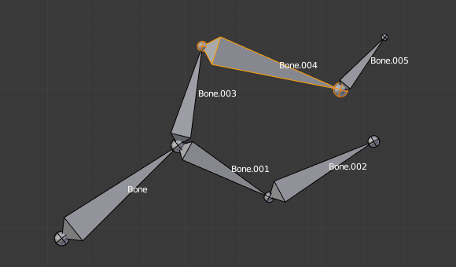

Transform¶
Transform¶
We will not detail here the various transformations of bones, nor things like axis locking, pivot points, and so on, as they are common to most object editing, and already described in the mesh section. The same goes for mirroring, as it is nearly the same as with mesh editing. Just keep in mind that bones’ roots and tips behave more or less like meshes’ vertices, and bones themselves act like edges in a mesh.
As you know, bones can have two types of relationships: They can be parented, and in addition connected. Parented bones behave in Edit Mode exactly as if they had no relations. They can be moved, rotated, scaled, etc. without affecting their descendants. However, connected bones must always have parent’s tips connected to child’s roots, so by transforming a bone, you will affect all its connected parent/children/siblings.
While with other transform tools, the “local axes” means the object’s axes, here they are the bone’s own axes (when you lock to a local axis, by pressing the relevant key twice, the constraint is applied along the selected bone’s local axis, not the armature object’s axis).
Finally, you can edit in the Transform panel in the Sidebar region the positions and radius of both joints of the active selected bone, as well as its roll rotation.
Scale Radius¶
Reference
| Mode: | Edit Mode |
|---|---|
| Menu: | |
| Hotkey: | Alt-S |
You can alter the radius that a bone has by selecting the head, body or tail of a bone, and then press Alt-S and move the mouse left or right. If the body is selected the mean radius will be scaled. And as usual, with connected bones, you scale at the same time the radius of the parent’s tip and of the children’s roots.
You can also alter the bone radius by selecting the tail or head of the bone you wish to alter, then navigate to and entering new values for the Tail and Head number fields.

A single selected bone in Octahedron visualization. |

After normal scale. |

A single selected bone in Envelope visualization. |

After Scaled Radius. Its length remains the same, but its joints’ radius are bigger. |
Note that, when you resize a bone (either by directly scaling it, or by moving one of its joints), Blender automatically adjusts the end-radii of its envelope proportionally to the size of the modification. Therefore, it is advisable to place all the bones first, and only then edit their properties.
Scale Envelope Distance¶
Reference
| Mode: | Edit Mode and Pose Mode |
|---|---|
| Menu: | |
| Hotkey: | Ctrl-Alt-S |
You can alter the size of the Bone Envelope volume by clicking on the body of the bone you want to alter, Ctrl-Alt-S then drag your mouse left or right and the Bone Envelope volume will alter accordingly.
You can also alter the Bone Envelope volume by selecting the Bone you wish to alter and then navigate to then enter a new value into it.
Altering the Bone Envelope volume does not alter the size of the bone just the range within which it can influence vertices of child objects.
|
A single bone selected in Envelope visualization. |

Its envelope distance scaled. |

A single “default size” bone selected in B-Bone visualization. |

Its envelope distance scaled. |

The same armature in Object Mode and B-Bone visualization, with Bone.004’s size scaled up. |
Align Bones¶
Reference
| Mode: | Edit Mode |
|---|---|
| Menu: | |
| Hotkey: | Ctrl-Alt-A |
Rotates the selected bones to achieve the same orientation as the active one.
Bone Roll¶
In Edit Mode, you can control the bone roll (i.e. the rotation around the Y axis of the bone).
However, after editing the armature, or when using euler rotation, you may want to set the bone roll.
Set Bone Roll¶
Reference
| Mode: | Edit Mode |
|---|---|
| Menu: | |
| Hotkey: | Ctrl-R |
This is a transform mode where you can edit the roll of all selected bones.
Recalculate Bone Roll¶
Reference
| Mode: | Edit Mode |
|---|---|
| Menu: | |
| Hotkey: | Ctrl-N |
- Axis Orientation
- Local Tangent
Align roll relative to the axis defined by the bone and its parent.
X, Z
- Global Axis
Align roll to global X, Y, Z axis.
X, Y, Z
- Active Bone
- Follow the rotation of the active bone.
- View Axis
- Set the roll to align with the viewport.
- Cursor
- Set the roll towards the 3D cursor.
- Flip Axis
- Reverse the axis direction.
- Shortest Rotation
- Avoids rolling the bone over 90 degrees from its current value.
Switch Direction¶
Reference
| Mode: | Edit Mode |
|---|---|
| Menu: | , |
| Hotkey: | Alt-F |
This tool allows you to switch the direction of the selected bones (i.e. their root will become their tip, and vice versa).
Switching the direction of a bone will generally break the chain(s) it belongs to. However, if you switch a whole (part of a) chain, the switched bones will still be parented/connected, but in “reversed order”. See the Fig. Switching example..

An armature with one selected bone, and one selected chain of three bones, just before switching. |

The selected bones have been switched. Bone.005 is no more connected nor parented to anything. The chain of switched bones still exists, but reversed (now Bone.002 is its root, and Bone is its tip). Bone.003 is now a free bone. |